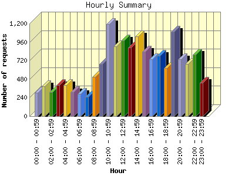

Report generated by Analog 6.0 and Report Magic 2.21
|
Web Server Statistics for "Harish Narayanan (hnarayan) - February 2007" Report generated by Analog 6.0 and Report Magic 2.21 |
The Hourly Summary identifies the level of activity broken down by each hour. Remember that one page hit can result in several server requests as the images for each page are loaded. This summary also compares the level of activity during working hours and after hours as a total for the report time frame.


| Hour | Number of requests | Number of bytes transferred | Percentage of the bytes | Percentage of the requests | |
|---|---|---|---|---|---|
| 1. | 00:00 - 00:59 | 306 | 43.996 MB | 3.69% | 1.97% |
| 2. | 01:00 - 01:59 | 389 | 33.741 MB | 2.83% | 2.50% |
| 3. | 02:00 - 02:59 | 312 | 28.573 MB | 2.40% | 2.01% |
| 4. | 03:00 - 03:59 | 404 | 32.994 MB | 2.77% | 2.60% |
| 5. | 04:00 - 04:59 | 405 | 46.612 MB | 3.91% | 2.60% |
| 6. | 05:00 - 05:59 | 309 | 42.162 MB | 3.54% | 1.99% |
| 7. | 06:00 - 06:59 | 287 | 43.556 MB | 3.65% | 1.85% |
| 8. | 07:00 - 07:59 | 248 | 25.388 MB | 2.13% | 1.59% |
| 9. | 08:00 - 08:59 | 512 | 42.681 MB | 3.58% | 3.29% |
| 10. | 09:00 - 09:59 | 676 | 70.067 MB | 5.88% | 4.35% |
| 11. | 10:00 - 10:59 | 1,192 | 45.742 MB | 3.84% | 7.67% |
| 12. | 11:00 - 11:59 | 904 | 50.397 MB | 4.23% | 5.81% |
| 13. | 12:00 - 12:59 | 980 | 62.089 MB | 5.21% | 6.30% |
| 14. | 13:00 - 13:59 | 887 | 44.011 MB | 3.69% | 5.71% |
| 15. | 14:00 - 14:59 | 1,030 | 49.970 MB | 4.19% | 6.62% |
| 16. | 15:00 - 15:59 | 834 | 57.292 MB | 4.81% | 5.36% |
| 17. | 16:00 - 16:59 | 736 | 51.660 MB | 4.33% | 4.73% |
| 18. | 17:00 - 17:59 | 783 | 42.508 MB | 3.57% | 5.04% |
| 19. | 18:00 - 18:59 | 624 | 144.403 MB | 12.12% | 4.01% |
| 20. | 19:00 - 19:59 | 1,090 | 39.675 MB | 3.33% | 7.01% |
| 21. | 20:00 - 20:59 | 733 | 53.246 MB | 4.47% | 4.71% |
| 22. | 21:00 - 21:59 | 679 | 49.875 MB | 4.18% | 4.37% |
| 23. | 22:00 - 22:59 | 794 | 71.770 MB | 6.02% | 5.11% |
| 24. | 23:00 - 23:59 | 434 | 19.486 MB | 1.64% | 2.79% |
| Work Hours (8:00am-4:59pm) | 7,751 | 473.909 MB | 39.76% | 49.85% | |
| After Hours (5:00pm-7:59am) | 7,797 | 717.982 MB | 60.24% | 50.15% | |
This report was generated on March 6, 2007 18:40.
Report time frame February 1, 2007 00:06 to February 28, 2007 23:53.
| Web statistics report produced by: | |
 Analog 6.0 Analog 6.0 |  Report Magic 2.21 Report Magic 2.21 |